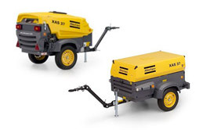

-
Atlas Copco XAS 27HP
Производительность: 1000 л/мин.
Давление: 7 бар
Один выход
Подходит для одного отбойного молотка
-

Atlas Copco XAS 37KD
Производительность: 2000 л/мин.
Давление: 7 бар
-
Atlas Copco XAS 47Dd
Производительность: 2600 л/мин.
Давление: 7 бар
Два выхода
Подходит для двух отбойных молотков
-
Atlas Copco XAS 57Dd
Производительность: 3000 л/мин.
Давление: 7 бар
-
Atlas Copco XAS 67Dd
Производительность: 3700 л/мин.
Давление: 7 бар
Два выхода
-
У нас широкий выбор компрессорного оборудования Atlas Copco серии XAS
Посмотреть все компрессоры XAS
Продажа, ввод в эксплуатацию, сервисное обслуживание и ремонт компрессорного оборудования Atlas Copco
Учитывая существующую острую необходимость в минимизации простоев производства у наших клиентов, мы сделали упор на специализированных мастерских, которые могут быстро выполнять текущий и капитальный ремонт наиболее экономичным образом. Для повышения эффективности мы храним на складах большой ассортимент запчастей и тестового оборудования. Все это, а также наличие опытных технических специалистов, имеющих все необходимые сертификаты для обслуживания конкретных моделей инструментов, позволяет минимизировать сроки исполнения заказов и повысить качество оказываемых услуг. После обслуживания все инструменты проходят ряд испытаний на соответствие спецификациям Atlas Copco.